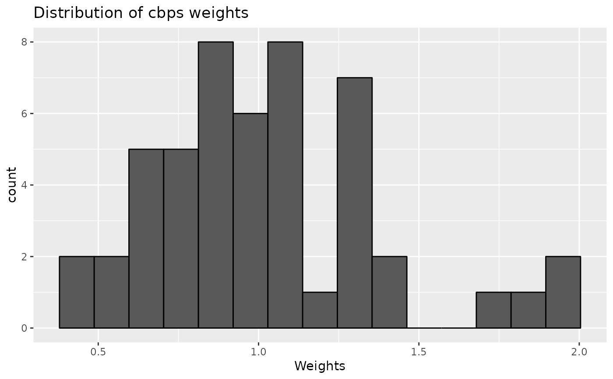
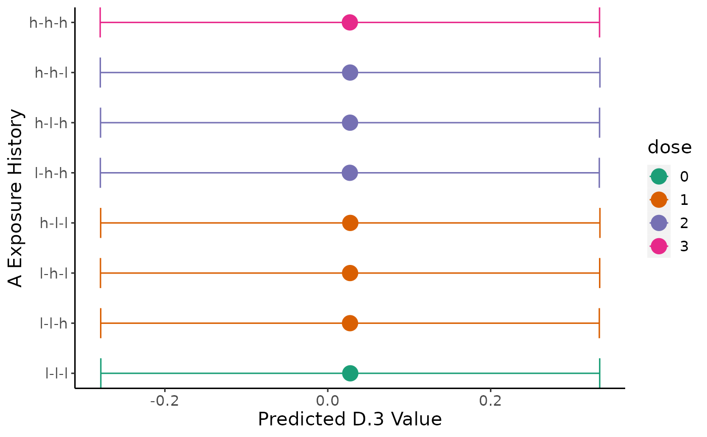

Estimate, compare, and visualize exposure histories
Source:R/compareHistories.R
compareHistories.RdTakes fitted model output to created predicted values for user-specified histories (pooling for imputed data), before conducting contrast comparisons (pooling for imputed data), correcting for multiple comparisons, and then plotting results.
Usage
compareHistories(
obj,
fit,
hi_lo_cut = c(0.4, 0.6),
dose_level = c("h", "l"),
reference = NULL,
comparison = NULL,
mc_comp_method = stats::p.adjust.methods,
verbose = FALSE,
save.out = FALSE
)
# S3 method for devMSM_comparisons
print(x, save.out = FALSE, ...)
# S3 method for devMSM_comparisons
plot(
x,
colors = "Dark2",
exp_lab = NULL,
out_lab = NULL,
save.out = FALSE,
...
)
# S3 method for devMSM_comparisons
summary(object, type = c("preds", "comps"), ...)Arguments
- obj
initialized MSM object from
initMSM()- fit
list of model outputs from
fitModel()- hi_lo_cut
list of two numbers indicating quantile values that reflect high and low values, respectively, for continuous exposure (default is median split)
- dose_level
(optional) "l" or "h" indicating whether low or high doses should be tallied in tables and plots (default is high "h")
- reference
lists of one or more strings of "-"-separated "l" and "h" values indicative of a reference exposure history to which to compare comparison, required if comparison is supplied
- comparison
(optional) list of one or more strings of "-"-separated "l" and "h" values indicative of comparison history/histories to compare to reference, required if reference is supplied
- mc_comp_method
(optional) character abbreviation for multiple comparison correction method for stats::p.adjust, default is Benjamini-Hochburg ("BH")
- verbose
(optional) TRUE or FALSE indicator for printing output to console. default is FALSE.
- save.out
(optional) Either logical or a character string. If
TRUE, it will output the result to a default file name withinhome_dirset ininitMSM(). You can load the data withx <- readRDS(file). To use a non-default file name, specify a character string with the file name. It will save relative tohome_dir. There might be naming conflicts where two objects get saved to the same file. In these cases, users should specify a custom name. default is FALSE.- x
devMSM_histories object from
compareHistories()- ...
ignored
- colors
(optional) character specifying Brewer palette or list of colors (n(epochs)+1) for plotting (default is "Dark2" palette)
- exp_lab
(optional) character label for exposure variable in plots (default is variable name)
- out_lab
(optional) character label for outcome variable in plots (default is variable name)
- object
devMSM_histories object from
compareHistories()- type
Either "preds" or "comps" corresponding to the results of
marginaleffects::avg_predictions()at low and high dosages ormarginaleffects::comparisons()respectively
Value
list containing two dataframes: preds with predictions from
marginaleffects::avg_predictions() containing average expected outcome
for different exposure histories and comps with contrasts from
marginaleffects::comparisons() comparing different exposure history
See also
marginaleffects::avg_predictions(),
https://cran.r-project.org/web/packages/marginaleffects/marginaleffects.pdf;
marginaleffects::hypotheses(),
https://cran.r-project.org/web/packages/marginaleffects/marginaleffects.pdf;
stats::p.adjust(),
https://www.rdocumentation.org/packages/stats/versions/3.6.2/topics/p.adjust;
Examples
library(devMSMs)
data <- data.frame(
ID = 1:50,
A.1 = rnorm(n = 50),
A.2 = rnorm(n = 50),
A.3 = rnorm(n = 50),
B.1 = rnorm(n = 50),
B.2 = rnorm(n = 50),
B.3 = rnorm(n = 50),
C = rnorm(n = 50),
D.3 = rnorm(n = 50)
)
obj <- initMSM(
data,
exposure = c("A.1", "A.2", "A.3"),
ti_conf = c("C"),
tv_conf = c("B.1", "B.2", "B.3", "D.3")
)
f <- createFormulas(obj, type = "short")
w <- createWeights(data = data, obj = obj, formulas = f)
fit <- fitModel(
data = data, obj = obj, weights = w,
outcome = "D.3", model = "m0"
)
comp <- compareHistories(
obj,
fit = fit,
hi_lo_cut = c(0.3, 0.6)
)
print(comp)
#> Summary of Exposure Main Effects:
#> USER ALERT: Out of the total of 50 individuals in the sample, below is the distribution of the 50 (100%) individuals that fall into 8 user-selected exposure histories (out of the 8 total) created from 60th and 30th percentile values for low and high levels of exposure-epoch A.1, A.2, A.3.
#> USER ALERT: Please inspect the distribution of the sample across the following exposure histories and ensure there is sufficient spread to avoid extrapolation and low precision:
#>
#> +---------------+----+
#> | epoch_history | n |
#> +===============+====+
#> | h-h-h | 6 |
#> +---------------+----+
#> | h-h-l | 6 |
#> +---------------+----+
#> | h-l-h | 7 |
#> +---------------+----+
#> | h-l-l | 6 |
#> +---------------+----+
#> | l-h-h | 3 |
#> +---------------+----+
#> | l-h-l | 10 |
#> +---------------+----+
#> | l-l-h | 9 |
#> +---------------+----+
#> | l-l-l | 3 |
#> +---------------+----+
#>
#> Table: Summary of user-selected exposure histories based on exposure main effects A.1, A.2, A.3:
#>
#> Below are the pooled average predictions by user-specified history:
#> +-------+-------+-------+-------+----------+-----------+---------+
#> | term | A.1 | A.2 | A.3 | estimate | std.error | p.value |
#> +=======+=======+=======+=======+==========+===========+=========+
#> | l-l-l | -0.64 | -0.76 | -0.67 | 0.077 | 0.14 | 0.59 |
#> +-------+-------+-------+-------+----------+-----------+---------+
#> | l-l-h | -0.64 | -0.76 | 0.18 | -0.018 | 0.19 | 0.93 |
#> +-------+-------+-------+-------+----------+-----------+---------+
#> | l-h-l | -0.64 | 0.18 | -0.67 | 0.065 | 0.19 | 0.73 |
#> +-------+-------+-------+-------+----------+-----------+---------+
#> | l-h-h | -0.64 | 0.18 | 0.18 | -0.029 | 0.23 | 0.9 |
#> +-------+-------+-------+-------+----------+-----------+---------+
#> | h-l-l | 0.15 | -0.76 | -0.67 | 0.043 | 0.12 | 0.72 |
#> +-------+-------+-------+-------+----------+-----------+---------+
#> | h-l-h | 0.15 | -0.76 | 0.18 | -0.051 | 0.16 | 0.75 |
#> +-------+-------+-------+-------+----------+-----------+---------+
#> | h-h-l | 0.15 | 0.18 | -0.67 | 0.032 | 0.12 | 0.8 |
#> +-------+-------+-------+-------+----------+-----------+---------+
#> | h-h-h | 0.15 | 0.18 | 0.18 | -0.063 | 0.16 | 0.7 |
#> +-------+-------+-------+-------+----------+-----------+---------+
#>
#> Conducting multiple comparison correction for all pairings between comparison histories and each refernece history using the holm method.
#>
#>
#> +-------------------+-------------+------------+-----------+--------------+
#> | term | estimate | std.error | p.value | p.value_corr |
#> +===================+=============+============+===========+==============+
#> | (l-l-l) - (l-l-h) | 0.09442617 | 0.11320466 | 0.4042138 | 1 |
#> +-------------------+-------------+------------+-----------+--------------+
#> | (l-l-l) - (l-h-l) | 0.01129593 | 0.09542762 | 0.9057731 | 1 |
#> +-------------------+-------------+------------+-----------+--------------+
#> | (l-l-l) - (l-h-h) | 0.10572210 | 0.14713343 | 0.4724208 | 1 |
#> +-------------------+-------------+------------+-----------+--------------+
#> | (l-l-l) - (h-l-l) | 0.03375172 | 0.12966513 | 0.7946331 | 1 |
#> +-------------------+-------------+------------+-----------+--------------+
#> | (l-l-l) - (h-l-h) | 0.12817789 | 0.15137466 | 0.3971293 | 1 |
#> +-------------------+-------------+------------+-----------+--------------+
#> | (l-l-l) - (h-h-l) | 0.04504765 | 0.10608135 | 0.6710904 | 1 |
#> +-------------------+-------------+------------+-----------+--------------+
#> | (l-l-l) - (h-h-h) | 0.13947382 | 0.13069436 | 0.2858926 | 1 |
#> +-------------------+-------------+------------+-----------+--------------+
#> | (l-l-h) - (l-h-l) | -0.08313024 | 0.14898055 | 0.5768485 | 1 |
#> +-------------------+-------------+------------+-----------+--------------+
#> | (l-l-h) - (l-h-h) | 0.01129593 | 0.09542762 | 0.9057731 | 1 |
#> +-------------------+-------------+------------+-----------+--------------+
#> | (l-l-h) - (h-l-l) | -0.06067446 | 0.19063681 | 0.7502782 | 1 |
#> +-------------------+-------------+------------+-----------+--------------+
#> | (l-l-h) - (h-l-h) | 0.03375172 | 0.12966513 | 0.7946331 | 1 |
#> +-------------------+-------------+------------+-----------+--------------+
#> | (l-l-h) - (h-h-l) | -0.04937853 | 0.17622735 | 0.7793257 | 1 |
#> +-------------------+-------------+------------+-----------+--------------+
#> | (l-l-h) - (h-h-h) | 0.04504765 | 0.10608135 | 0.6710905 | 1 |
#> +-------------------+-------------+------------+-----------+--------------+
#> | (l-h-l) - (l-h-h) | 0.09442617 | 0.11320466 | 0.4042139 | 1 |
#> +-------------------+-------------+------------+-----------+--------------+
#> | (l-h-l) - (h-l-l) | 0.02245578 | 0.20145893 | 0.9112470 | 1 |
#> +-------------------+-------------+------------+-----------+--------------+
#> | (l-h-l) - (h-l-h) | 0.11688196 | 0.21670353 | 0.5896361 | 1 |
#> +-------------------+-------------+------------+-----------+--------------+
#> | (l-h-l) - (h-h-l) | 0.03375172 | 0.12966513 | 0.7946331 | 1 |
#> +-------------------+-------------+------------+-----------+--------------+
#> | (l-h-l) - (h-h-h) | 0.12817789 | 0.15137466 | 0.3971293 | 1 |
#> +-------------------+-------------+------------+-----------+--------------+
#> | (l-h-h) - (h-l-l) | -0.07197039 | 0.24462536 | 0.7686001 | 1 |
#> +-------------------+-------------+------------+-----------+--------------+
#> | (l-h-h) - (h-l-h) | 0.02245578 | 0.20145892 | 0.9112470 | 1 |
#> +-------------------+-------------+------------+-----------+--------------+
#> | (l-h-h) - (h-h-l) | -0.06067446 | 0.19063681 | 0.7502782 | 1 |
#> +-------------------+-------------+------------+-----------+--------------+
#> | (l-h-h) - (h-h-h) | 0.03375172 | 0.12966513 | 0.7946331 | 1 |
#> +-------------------+-------------+------------+-----------+--------------+
#> | (h-l-l) - (h-l-h) | 0.09442617 | 0.11320466 | 0.4042139 | 1 |
#> +-------------------+-------------+------------+-----------+--------------+
#> | (h-l-l) - (h-h-l) | 0.01129593 | 0.09542762 | 0.9057731 | 1 |
#> +-------------------+-------------+------------+-----------+--------------+
#> | (h-l-l) - (h-h-h) | 0.10572210 | 0.14713343 | 0.4724208 | 1 |
#> +-------------------+-------------+------------+-----------+--------------+
#> | (h-l-h) - (h-h-l) | -0.08313024 | 0.14898055 | 0.5768485 | 1 |
#> +-------------------+-------------+------------+-----------+--------------+
#> | (h-l-h) - (h-h-h) | 0.01129593 | 0.09542762 | 0.9057731 | 1 |
#> +-------------------+-------------+------------+-----------+--------------+
#> | (h-h-l) - (h-h-h) | 0.09442617 | 0.11320466 | 0.4042139 | 1 |
#> +-------------------+-------------+------------+-----------+--------------+
plot(comp)

summary(comp, "preds")
#> term A.1 A.2 A.3 estimate std.error statistic
#> 1 l-l-l -0.6372518 -0.7592967 -0.6717776 0.07671899 0.1409297 0.5443777
#> 2 l-l-h -0.6372518 -0.7592967 0.1824593 -0.01770718 0.1947815 -0.0909079
#> 3 l-h-l -0.6372518 0.1753341 -0.6717776 0.06542306 0.1903284 0.3437377
#> 4 l-h-h -0.6372518 0.1753341 0.1824593 -0.02900311 0.2324437 -0.1247748
#> 5 h-l-l 0.1516888 -0.7592967 -0.6717776 0.04296728 0.1176721 0.3651441
#> 6 h-l-h 0.1516888 -0.7592967 0.1824593 -0.05145889 0.1587808 -0.3240877
#> 7 h-h-l 0.1516888 0.1753341 -0.6717776 0.03167135 0.1246765 0.2540281
#> 8 h-h-h 0.1516888 0.1753341 0.1824593 -0.06275483 0.1632034 -0.3845190
#> p.value s.value conf.low conf.high dose
#> 1 0.5861816 0.7705805 -0.1994982 0.3529361 0
#> 2 0.9275658 0.1084785 -0.3994719 0.3640576 1
#> 3 0.7310435 0.4519708 -0.3076138 0.4384599 1
#> 4 0.9007019 0.1508784 -0.4845845 0.4265782 2
#> 5 0.7150039 0.4839771 -0.1876658 0.2736004 1
#> 6 0.7458716 0.4230007 -0.3626635 0.2597457 2
#> 7 0.7994738 0.3228773 -0.2126901 0.2760328 2
#> 8 0.7005938 0.5133499 -0.3826277 0.2571180 3
summary(comp, "comps")
#> term estimate std.error statistic p.value s.value
#> 1 (l-l-l) - (l-l-h) 0.09442617 0.11320466 0.8341191 0.4042138 1.3068094
#> 2 (l-l-l) - (l-h-l) 0.01129593 0.09542762 0.1183717 0.9057731 0.1427783
#> 3 (l-l-l) - (l-h-h) 0.10572210 0.14713343 0.7185458 0.4724208 1.0818555
#> 4 (l-l-l) - (h-l-l) 0.03375172 0.12966513 0.2602991 0.7946331 0.3316393
#> 5 (l-l-l) - (h-l-h) 0.12817789 0.15137466 0.8467592 0.3971293 1.3323191
#> 6 (l-l-l) - (h-h-l) 0.04504765 0.10608135 0.4246519 0.6710904 0.5754209
#> 7 (l-l-l) - (h-h-h) 0.13947382 0.13069436 1.0671755 0.2858926 1.8064549
#> 8 (l-l-h) - (l-h-l) -0.08313024 0.14898055 -0.5579939 0.5768485 0.7937355
#> 9 (l-l-h) - (l-h-h) 0.01129593 0.09542762 0.1183717 0.9057731 0.1427784
#> 10 (l-l-h) - (h-l-l) -0.06067446 0.19063681 -0.3182725 0.7502782 0.4145024
#> 11 (l-l-h) - (h-l-h) 0.03375172 0.12966513 0.2602991 0.7946331 0.3316393
#> 12 (l-l-h) - (h-h-l) -0.04937853 0.17622735 -0.2801979 0.7793257 0.3597017
#> 13 (l-l-h) - (h-h-h) 0.04504765 0.10608135 0.4246519 0.6710905 0.5754209
#> 14 (l-h-l) - (l-h-h) 0.09442617 0.11320466 0.8341191 0.4042139 1.3068093
#> 15 (l-h-l) - (h-l-l) 0.02245578 0.20145893 0.1114658 0.9112470 0.1340860
#> 16 (l-h-l) - (h-l-h) 0.11688196 0.21670353 0.5393634 0.5896361 0.7621032
#> 17 (l-h-l) - (h-h-l) 0.03375172 0.12966513 0.2602991 0.7946331 0.3316393
#> 18 (l-h-l) - (h-h-h) 0.12817789 0.15137466 0.8467592 0.3971293 1.3323191
#> 19 (l-h-h) - (h-l-l) -0.07197039 0.24462536 -0.2942066 0.7686001 0.3796950
#> 20 (l-h-h) - (h-l-h) 0.02245578 0.20145892 0.1114658 0.9112470 0.1340860
#> 21 (l-h-h) - (h-h-l) -0.06067446 0.19063681 -0.3182725 0.7502782 0.4145024
#> 22 (l-h-h) - (h-h-h) 0.03375172 0.12966513 0.2602991 0.7946331 0.3316393
#> 23 (h-l-l) - (h-l-h) 0.09442617 0.11320466 0.8341191 0.4042139 1.3068093
#> 24 (h-l-l) - (h-h-l) 0.01129593 0.09542762 0.1183717 0.9057731 0.1427783
#> 25 (h-l-l) - (h-h-h) 0.10572210 0.14713343 0.7185458 0.4724208 1.0818555
#> 26 (h-l-h) - (h-h-l) -0.08313024 0.14898055 -0.5579939 0.5768485 0.7937355
#> 27 (h-l-h) - (h-h-h) 0.01129593 0.09542762 0.1183717 0.9057731 0.1427783
#> 28 (h-h-l) - (h-h-h) 0.09442617 0.11320466 0.8341191 0.4042139 1.3068093
#> conf.low conf.high dose p.value_corr
#> 1 -0.1274509 0.3163032 0 - 1 1
#> 2 -0.1757388 0.1983306 0 - 1 1
#> 3 -0.1826541 0.3940983 0 - 2 1
#> 4 -0.2203873 0.2878907 0 - 1 1
#> 5 -0.1685110 0.4248668 0 - 2 1
#> 6 -0.1628680 0.2529633 0 - 2 1
#> 7 -0.1166824 0.3956301 0 - 3 1
#> 8 -0.3751268 0.2088663 1 - 1 1
#> 9 -0.1757388 0.1983306 1 - 2 1
#> 10 -0.4343157 0.3129668 1 - 1 1
#> 11 -0.2203873 0.2878907 1 - 2 1
#> 12 -0.3947778 0.2960207 1 - 2 1
#> 13 -0.1628680 0.2529633 1 - 3 1
#> 14 -0.1274509 0.3163032 1 - 2 1
#> 15 -0.3723965 0.4173080 1 - 1 1
#> 16 -0.3078492 0.5416131 1 - 2 1
#> 17 -0.2203873 0.2878907 1 - 2 1
#> 18 -0.1685110 0.4248668 1 - 3 1
#> 19 -0.5514273 0.4074865 2 - 1 1
#> 20 -0.3723965 0.4173080 2 - 2 1
#> 21 -0.4343157 0.3129668 2 - 2 1
#> 22 -0.2203873 0.2878907 2 - 3 1
#> 23 -0.1274509 0.3163032 1 - 2 1
#> 24 -0.1757388 0.1983306 1 - 2 1
#> 25 -0.1826541 0.3940983 1 - 3 1
#> 26 -0.3751268 0.2088663 2 - 2 1
#> 27 -0.1757388 0.1983306 2 - 3 1
#> 28 -0.1274509 0.3163032 2 - 3 1
comp2 <- compareHistories(
obj,
fit = fit,
reference = "l-l-l",
comparison = c("h-h-h", "h-h-l")
)
print(comp2)
#> Summary of Exposure Main Effects:
#> USER ALERT: Out of the total of 50 individuals in the sample, below is the distribution of the 15 (30%) individuals that fall into 3 user-selected exposure histories (out of the 8 total) created from 60th and 40th percentile values for low and high levels of exposure-epoch A.1, A.2, A.3.
#> USER ALERT: Please inspect the distribution of the sample across the following exposure histories and ensure there is sufficient spread to avoid extrapolation and low precision:
#>
#> +---------------+---+
#> | epoch_history | n |
#> +===============+===+
#> | h-h-h | 6 |
#> +---------------+---+
#> | h-h-l | 6 |
#> +---------------+---+
#> | l-l-l | 3 |
#> +---------------+---+
#>
#> Table: Summary of user-selected exposure histories based on exposure main effects A.1, A.2, A.3:
#>
#> Below are the pooled average predictions by user-specified history:
#> +-------+-------+-------+-------+----------+-----------+---------+
#> | term | A.1 | A.2 | A.3 | estimate | std.error | p.value |
#> +=======+=======+=======+=======+==========+===========+=========+
#> | l-l-l | -0.49 | -0.5 | -0.36 | 0.0327 | 0.15 | 0.82 |
#> +-------+-------+-------+-------+----------+-----------+---------+
#> | h-h-l | 0.15 | 0.18 | -0.36 | -0.0027 | 0.13 | 0.98 |
#> +-------+-------+-------+-------+----------+-----------+---------+
#> | h-h-h | 0.15 | 0.18 | 0.18 | -0.0628 | 0.16 | 0.7 |
#> +-------+-------+-------+-------+----------+-----------+---------+
#>
#> Conducting multiple comparison correction for all pairings between comparison histories and each refernece history using the holm method.
#>
#>
#> +-------------------+-------------+------------+-----------+--------------+
#> | term | estimate | std.error | p.value | p.value_corr |
#> +===================+=============+============+===========+==============+
#> | (h-h-h) - (l-l-l) | -0.09546524 | 0.09365663 | 0.3080553 | 0.6161106 |
#> +-------------------+-------------+------------+-----------+--------------+
#> | (h-h-l) - (l-l-l) | -0.03545197 | 0.08466395 | 0.6754080 | 0.6754080 |
#> +-------------------+-------------+------------+-----------+--------------+
plot(comp2)

summary(comp2, "preds")
#> term A.1 A.2 A.3 estimate std.error statistic
#> 1 l-l-l -0.4856068 -0.5021278 -0.3604574 0.032710410 0.1453541 0.22503944
#> 7 h-h-l 0.1516888 0.1753341 -0.3604574 -0.002741563 0.1289107 -0.02126714
#> 8 h-h-h 0.1516888 0.1753341 0.1824593 -0.062754826 0.1632034 -0.38451902
#> p.value s.value conf.low conf.high dose
#> 1 0.8219486 0.2828799 -0.2521784 0.3175993 0
#> 7 0.9830326 0.0246889 -0.2554020 0.2499189 2
#> 8 0.7005938 0.5133499 -0.3826277 0.2571180 3
summary(comp2, "comps")
#> term estimate std.error statistic p.value s.value
#> 1 (h-h-h) - (l-l-l) -0.09546524 0.09365663 -1.0193111 0.3080553 1.6987387
#> 2 (h-h-l) - (l-l-l) -0.03545197 0.08466395 -0.4187375 0.6754080 0.5661689
#> conf.low conf.high dose p.value_corr
#> 1 -0.2790289 0.08809838 3 - 0 0.6161106
#> 2 -0.2013903 0.13048633 2 - 0 0.6754080